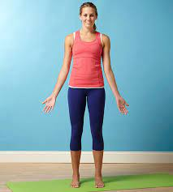
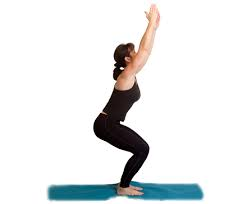
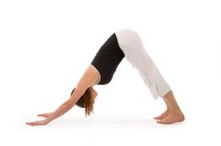
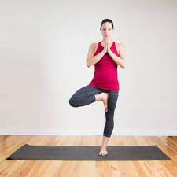

Yoga Asanas
Although it’s an ancient practice, yoga has become the exercise du jour in recent years. Everyone from A-list celebs to your coworkers are getting their om on these days — and for good reason.
Practicing yoga has serious health benefits beyond flexibility and balanceTrusted Source, though those are some great perks. Studies show yoga does everything from fighting anxiety, depression, and stressTrusted Source, to reducing inflammation in the body. Trusted Source Yoga can even make migraines suck less.Trusted Source
Plus, striking an impressive asana (yoga lingo for pose) looks ridiculously cool. The only problem? Sometimes our yoga teacher is speaking a different language, which makes it slightly difficult to follow along.
With Sanksrit names like Utkatasana and Trikonasana, yoga poses may sound a lot more like spells you’d learn at Hogwarts than shapes you can actually get your body to make.
To help everyone from yoga newbies to experienced practitioners, we went to Chrissy Carter, a certified yoga instructor, to help put together a definitive guide to yoga poses.
Consider it your cheat sheet to finally mastering the common poses you’re likely to encounter in most open-level classes.
Basic Yoga Poses
1.Mountain Pose

How to do it
- Stand with your feet together or hip-width apart. Ground down through the four corners of your feet. Roll your shoulders away from your ears, draw your shoulder blades down your back, and lift the crown of your head.
- Engage your thighs, draw your belly button in, and lengthen up through the spine. Turn your palms facing the front of the room. Relax your jaw and unfurrow your brow. Breathe easy.
2.Chair Pose

How to do it
- From all fours, walk your hands 6 inches in front of you. Tuck your toes and lift your hips up and back to lengthen your spine. If your hamstrings are tight, keep your knees bent in order to bring your weight back into the legs.
- Spread your fingers wide, press into your hands, and rotate your arms so that your biceps are facing toward one another. Press your thighs back toward the wall behind you.
3.Downward Facing Dog

How to do it
-
From all fours, walk your hands 6 inches in front of you. Tuck your toes and lift your hips up and back to lengthen your spine. If your hamstrings are tight, keep your knees bent in order to bring your weight back into the legs.
-
Spread your fingers wide, press into your hands, and rotate your arms so that your biceps are facing toward one another. Press your
4.Triangle Pose

How to do it
- Stand with feet wide, 3–4 feet apart. Shift your right heel out so your toes are pointing slightly inward. Turn your left foot out 90 degrees. Line up your left heel with the arch of your right foot.
-
Keeping both legs straight, ground through your feet. Lift arms into a T at shoulder height. Reach forward with your front arm. When you can’t reach anymore, hinge at the front hip.
5.Tree Pose

How to do it
-
Start in Mountain Pose. Find a fixed point in front of you and stare at it to help you balance
-
As you inhale, shift the weight into your left foot and lift your right foot an inch off the floor. Using your right hand, bring the foot to your shin or inner thigh. Avoid placing your foot directly on the knee.
-
As you exhale, ground through the standing leg and lengthen through the crown of your head. Bring your palms to touch in front of your sternum into prayer hands.